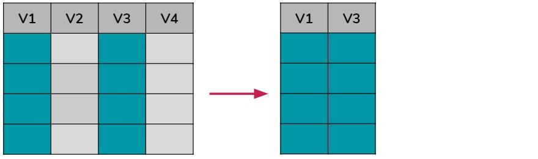
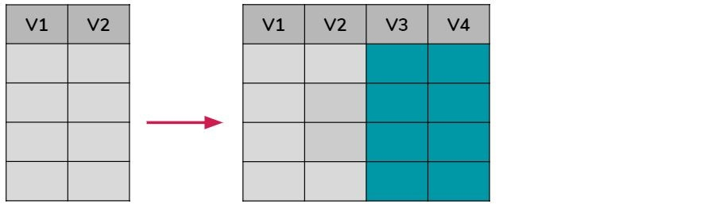
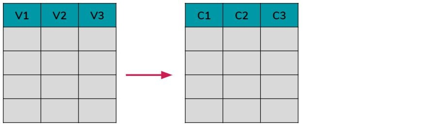

Clase 2 MANIPULACIÓN DE DATOS
Ahora que ya sabemos abrir un dataset y conocer que información tiene, vamos a aprender a manipular, limpiar, normalizar y transformar los datos, o lo que se conoce como data wrangling. Para esto vamos a trabajar con uno de los paquetes más usados y más útiles de R que se llama tidyverse.
Pero, ¿Qué es un paquete?
Cuando instalamos R ya viene con múltiples funciones básicas para manipular datos, sin embargo el potencial de la herramienta surge con la posibilidad de incorporar constantemente nuevas funciones que nos permitan realizar nuevas tareas o mejorar el resultado de las ya existentes.
Estos grupos de funciones son a los que llamamos paquetes o packages y para poder utilizarlos es necesario instalarlos por única vez en la computadora, y luego activarlos cada vez que vayamos a usarlos.
Comencemos instalándolo. Esto podemos hacerlo manualmente en Tools/Install packages:

O directamente escribiendo install.packages() adentro de un chunk:
#install.packages("tidyverse")Una vez que instalamos el paquete, no vamos a tener que volver a hacerlo. Solamente vamos a tener que “activarlo” cada vez que queramos usarlo. Esta activación se hace con library() así:
library(tidyverse)Ahora volvamos a cargar nuestro dataset (el mismo de la clase anterior):
datos_amba <- read.csv("data/amba_properati.csv")A continuación veremos como el paquete tidyverse nos va a permitir manipular nuestros datos a partir de las funciones: filtrar, modificar, seleccionar, ordenar, renombrar, resumir y agrupar.
Aprender a utilizar todas estas funciones es muy importante ya que la comprensión, transformación y limpieza de los datos es la etapa que más tiempo nos llevará a la hora de encarar cualquier proyecto de Ciencia de Datos.
2.1 Filtrar registros que cumplan condiciones
Como su nombre lo indica, esta función hace referencia a realizar un filtro determinado sobre los registros/filas de toda la base de datos, es decir, quedarnos solo con las filas que cumplan cierta condición establecida. Gráficamente se vería como algo así:

Esto nos será muy útil si por algún motivo queremos dejar de lado registros y utilizar solo una parte de la base. Por ejemplo, en el caso de nuestro dataset, que ya vimos que incluye datos de AMBA y CABA, podríamos filtrar la data y quedarnos solo con los registros ubicados en CABA:
filtro <- filter(datos_amba, provincia=="CABA")
head(filtro)## created_on provincia partido rooms surface_total surface_covered price currency
## 1 202006 CABA Comuna 7 1 40 37 22500 ARS
## 2 202006 CABA Comuna 13 1 30 30 18000 ARS
## 3 202006 CABA Comuna 13 1 31 29 17900 ARS
## 4 202006 CABA Comuna 1 1 35 35 42000 ARS
## 5 202006 CABA Comuna 13 2 60 50 32000 ARS
## 6 202006 CABA Comuna 13 2 53 44 26000 ARS
## title property_type
## 1 Departamento - Flores Departamento
## 2 Retasado! Monoambiente en Nuñez, excelente ubicación! Departamento
## 3 Departamento - Belgrano Departamento
## 4 Monoambiente con cochera. Zencity. Puerto Madero Departamento
## 5 Depto 2AMB c/ Suite y Toilette - Deheza 1600 - Incluye Cochera Departamento
## 6 Unico 2 ambientes A Estrenar! Posesion inmediata! - Nuñez Departamento
## operation_type lat lon
## 1 Alquiler -34.61917 -58.46222
## 2 Alquiler -34.55460 -58.46652
## 3 Alquiler -34.56318 -58.46461
## 4 Alquiler -34.61836 -58.36090
## 5 Alquiler -34.53795 -58.46671
## 6 Alquiler -34.54756 -58.47037O los del mes de Julio 2020:
filtro <- filter(datos_amba, created_on==202007)
head(filtro)## created_on provincia partido rooms surface_total surface_covered price currency
## 1 202007 GBA Tigre 2 108 69 20000 ARS
## 2 202007 GBA Tigre 2 57 45 27500 ARS
## 3 202007 CABA Comuna 14 1 45 40 23000 ARS
## 4 202007 CABA Comuna 14 2 48 48 30000 ARS
## 5 202007 CABA Comuna 14 2 42 37 26000 ARS
## 6 202007 CABA Comuna 15 2 41 38 21000 ARS
## title property_type
## 1 DEPARTAMENTO EN ALQUILER EN NORDELTA 2 AMB CON TERRAZA Y JACUZZI Departamento
## 2 2 ambientes con cochera y baulera - Vista al Lago Central Departamento
## 3 Departamento en Alquiler con Balcón y Amenities Departamento
## 4 Botánico - 2 ambientes amueblado con vista a Boulevard Cerviño Departamento
## 5 Departamento - Palermo Departamento
## 6 Departamento de 2 ambientes en Alquiler en Palermo Departamento
## operation_type lat lon
## 1 Alquiler -34.39437 -58.64925
## 2 Alquiler -34.40910 -58.63129
## 3 Alquiler -34.59274 -58.42749
## 4 Alquiler -34.57914 -58.41289
## 5 Alquiler -34.59571 -58.41587
## 6 Alquiler -34.59856 -58.43026Nótese que para filtrar bajo la condición de “igual” utilicé “==”, pero también podría haber utilizado otras condiciones como:
- A==B -> A igual a B
- A!=B -> A diferente a B
- A<B -> A menor a B
- A<=B -> A menor o igual a B
- A>B -> A mayor a B
- A>=B -> A mayor o igual a B
- is.na(A) -> A tiene valor nulo (NA)
- !is.na(A)-> A no tiene valor nulo (NA)
- A%in%B -> A incluye el valor B
- !(A%in%B)-> A no incluye el valor de B
Entonces, por ejemplo si quiero quedarme solo con las propiedades que tienen una superficie cubierta mayor o igual a 75m2 debería escribirlo así:
filtro <- filter(datos_amba, surface_covered>=75)
head(filtro)## created_on provincia partido rooms surface_total surface_covered price currency
## 1 202006 GBA Ituzaingó 3 75 75 19000 ARS
## 2 202006 GBA Tigre 3 95 80 42000 ARS
## 3 202006 GBA Tigre 3 98 90 42000 ARS
## 4 202006 CABA Comuna 13 3 109 94 90000 ARS
## 5 202006 CABA Comuna 14 3 152 152 240000 ARS
## 6 202006 CABA Comuna 14 3 90 85 80000 ARS
## title
## 1 Americana a 6 cuadras de la estacion de S.A. de Padua
## 2 3 AMBIENTES EN EDIFICIO MIRADORES DE LA BAHIA CON COCHERA FIJA
## 3 ¡EN EXCLUSIVA! Departamento en alquiler de 3 ambientes Miradores de La Bahía, Bahía de Nordelta.
## 4 Alquiler Depto 3 Amb a Estrenar Nuñez C/Cochera
## 5 ALQUILER en TORRES DE GELLY 152 m2 con 2 dorm dep y 1 coch ALTO vista Rio SIN muebles
## 6 ALQUILER 3 AMB CON DEPENDENCIA! - Y COCHERA TORRE AMENITIES!!
## property_type operation_type lat lon
## 1 Casa Alquiler -34.65957 -58.69712
## 2 Departamento Alquiler -34.39642 -58.64665
## 3 Departamento Alquiler -34.39512 -58.64665
## 4 Departamento Alquiler -34.54521 -58.46286
## 5 Departamento Alquiler -34.57760 -58.40499
## 6 Departamento Alquiler -34.59353 -58.41462O si quiero eliminar los registros que corresponden a departamentos debería hacer el siguiente chunk:
filtro <- filter(datos_amba, property_type!="Departamento")
head(filtro)## created_on provincia partido rooms surface_total surface_covered price
## 1 202006 GBA La Matanza 2 24 24 12000
## 2 202006 GBA General San Martín 2 40 40 15000
## 3 202006 GBA Ituzaingó 3 75 75 19000
## 4 202006 CABA Comuna 14 4 125 105 85000
## 5 202006 GBA Merlo 4 180 140 27000
## 6 202006 GBA Pilar 4 267 267 50000
## currency title property_type
## 1 ARS PH - Lomas Del Mirador PH
## 2 ARS PH - Chilavert PH
## 3 ARS Americana a 6 cuadras de la estacion de S.A. de Padua Casa
## 4 ARS PH en alquiler 4 ambientes - Las Cañitas PH
## 5 ARS Casa en Padua 3 dormitorios en alquiler Casa
## 6 ARS Casa en venta o alquiler en La Peregrina Casa
## operation_type lat lon
## 1 Alquiler -34.66253 -58.52914
## 2 Alquiler -34.54301 -58.57573
## 3 Alquiler -34.65957 -58.69712
## 4 Alquiler -34.57207 -58.43249
## 5 Alquiler -34.66154 -58.71565
## 6 Alquiler -34.47091 -58.82270Si queremos filtrar todas las propiedades ubicadas en 3 partidos diferentes como por ejempo La Plata, General San Martín y La Matanza debemos utilizar %in% de la siguiente forma:
filtro <- filter(datos_amba, partido %in% c("La Plata", "General San Martín", "La Matanza"))
head(filtro)## created_on provincia partido rooms surface_total surface_covered price
## 1 202006 GBA La Matanza 2 24 24 12000
## 2 202006 GBA General San Martín 2 40 40 15000
## 3 202006 GBA La Plata 2 50 50 18000
## 4 202006 GBA La Plata 2 35 35 13500
## 5 202006 GBA General San Martín 2 56 48 14000
## 6 202006 GBA La Plata 3 40 40 10000
## currency title property_type
## 1 ARS PH - Lomas Del Mirador PH
## 2 ARS PH - Chilavert PH
## 3 ARS Alquiler, depto de un domitorio frente al parque San Martin Departamento
## 4 ARS Departamento - La Plata Departamento
## 5 ARS Departamento céntrico - Villa Ballester Departamento
## 6 ARS Departamento - José Hernández Departamento
## operation_type lat lon
## 1 Alquiler -34.66253 -58.52914
## 2 Alquiler -34.54301 -58.57573
## 3 Alquiler -34.93415 -57.96605
## 4 Alquiler -34.90645 -57.97335
## 5 Alquiler -34.55038 -58.55512
## 6 Alquiler -34.89768 -58.02787En cambio, si queremos filtrar todas las propiedades que no estén ubicadas en 3 partidos diferentes como por ejempo La Plata, General San Martín y La Matanza debemos utilizar ! + %in% de la siguiente forma:
filtro <- filter(datos_amba, !(partido %in% c("La Plata", "General San Martín", "La Matanza")))
head(filtro)## created_on provincia partido rooms surface_total surface_covered price currency
## 1 202006 CABA Comuna 7 1 40 37 22500 ARS
## 2 202006 CABA Comuna 13 1 30 30 18000 ARS
## 3 202006 CABA Comuna 13 1 31 29 17900 ARS
## 4 202006 CABA Comuna 1 1 35 35 42000 ARS
## 5 202006 GBA Vicente López 1 36 27 19000 ARS
## 6 202006 CABA Comuna 13 2 60 50 32000 ARS
## title
## 1 Departamento - Flores
## 2 Retasado! Monoambiente en Nuñez, excelente ubicación!
## 3 Departamento - Belgrano
## 4 Monoambiente con cochera. Zencity. Puerto Madero
## 5 Alquiler TORRE dpto de 1o2 ambientes - excelente luz y vista cochera optativa
## 6 Depto 2AMB c/ Suite y Toilette - Deheza 1600 - Incluye Cochera
## property_type operation_type lat lon
## 1 Departamento Alquiler -34.61917 -58.46222
## 2 Departamento Alquiler -34.55460 -58.46652
## 3 Departamento Alquiler -34.56318 -58.46461
## 4 Departamento Alquiler -34.61836 -58.36090
## 5 Departamento Alquiler -34.53344 -58.49345
## 6 Departamento Alquiler -34.53795 -58.46671Pero esto no es todo, ¿Cómo hago si quiero filtrar por 2 o más condiciones a la vez?
En este caso debemos utilizar los siguientes operadores lógicos:
- condición 1 & condición 2 -> se cumplen ambas condiciones a la vez
- condición 1 | condición 2 -> se cumple una u otra de las condiciones
- condición 1 & ! condición 2 -> se cumple la condición 1 pero no la condición 2
- !condición 1 & condición 2 -> no se cumple la condición 1 pero si la condición 2
- !(condición 1 & condición 2) -> no se cumple ninguna de las 2 condiciones
Por ejemplo, si queremos filtrar todos los registros pertenecientes a la Comuna 5 y a la Comuna 13:
filtro <- filter(datos_amba, partido=="Comuna 5" & partido=="Comuna 13")
head(filtro)## [1] created_on provincia partido rooms surface_total
## [6] surface_covered price currency title property_type
## [11] operation_type lat lon
## <0 rows> (or 0-length row.names)El resultado es 0 porque un registro no puede pertenecer a ambas comunas al mismo tiempo, sin embargo si queremos filtrar aquellos que pertenecen a una u otra podemos hacerlo así:
filtro <- filter(datos_amba, partido=="Comuna 5" | partido=="Comuna 13")
head(filtro)## created_on provincia partido rooms surface_total surface_covered price currency
## 1 202006 CABA Comuna 13 1 30 30 18000 ARS
## 2 202006 CABA Comuna 13 1 31 29 17900 ARS
## 3 202006 CABA Comuna 13 2 60 50 32000 ARS
## 4 202006 CABA Comuna 13 2 53 44 26000 ARS
## 5 202006 CABA Comuna 5 2 45 38 20000 ARS
## 6 202006 CABA Comuna 13 2 55 55 45000 ARS
## title property_type
## 1 Retasado! Monoambiente en Nuñez, excelente ubicación! Departamento
## 2 Departamento - Belgrano Departamento
## 3 Depto 2AMB c/ Suite y Toilette - Deheza 1600 - Incluye Cochera Departamento
## 4 Unico 2 ambientes A Estrenar! Posesion inmediata! - Nuñez Departamento
## 5 Departamento de 2 ambientes en Alquiler en Almagro Departamento
## 6 BLANCO ENCALADA AL 3000 A ESTRENAR Departamento
## operation_type lat lon
## 1 Alquiler -34.55460 -58.46652
## 2 Alquiler -34.56318 -58.46461
## 3 Alquiler -34.53795 -58.46671
## 4 Alquiler -34.54756 -58.47037
## 5 Alquiler -34.60613 -58.42947
## 6 Alquiler -34.56313 -58.46550También podemos quedarnos con aquellas propiedades que estén en alquiler y que tengan más de 50m2:
filtro <- filter(datos_amba, operation_type=="Alquiler" & surface_covered>=50)
head(filtro)## created_on provincia partido rooms surface_total surface_covered price currency
## 1 202006 CABA Comuna 13 2 60 50 32000 ARS
## 2 202006 CABA Comuna 13 2 55 55 45000 ARS
## 3 202006 GBA La Plata 2 50 50 18000 ARS
## 4 202006 GBA Ituzaingó 3 75 75 19000 ARS
## 5 202006 GBA Tigre 3 95 80 42000 ARS
## 6 202006 GBA Tigre 3 98 90 42000 ARS
## title
## 1 Depto 2AMB c/ Suite y Toilette - Deheza 1600 - Incluye Cochera
## 2 BLANCO ENCALADA AL 3000 A ESTRENAR
## 3 Alquiler, depto de un domitorio frente al parque San Martin
## 4 Americana a 6 cuadras de la estacion de S.A. de Padua
## 5 3 AMBIENTES EN EDIFICIO MIRADORES DE LA BAHIA CON COCHERA FIJA
## 6 ¡EN EXCLUSIVA! Departamento en alquiler de 3 ambientes Miradores de La Bahía, Bahía de Nordelta.
## property_type operation_type lat lon
## 1 Departamento Alquiler -34.53795 -58.46671
## 2 Departamento Alquiler -34.56313 -58.46550
## 3 Departamento Alquiler -34.93415 -57.96605
## 4 Casa Alquiler -34.65957 -58.69712
## 5 Departamento Alquiler -34.39642 -58.64665
## 6 Departamento Alquiler -34.39512 -58.64665O con aquellas propiedades que se ubiquen en la Comuna 12, 13 o 14 y que no sean monoambientes:
filtro <- filter(datos_amba, partido %in% c("Comuna 14", "Comuna 13", "Comuna 12") & ! rooms==1)
head(filtro)## created_on provincia partido rooms surface_total surface_covered price currency
## 1 202006 CABA Comuna 13 2 60 50 32000 ARS
## 2 202006 CABA Comuna 13 2 53 44 26000 ARS
## 3 202006 CABA Comuna 12 2 42 37 22000 ARS
## 4 202006 CABA Comuna 14 2 43 33 27000 ARS
## 5 202006 CABA Comuna 13 2 55 55 45000 ARS
## 6 202006 CABA Comuna 14 2 48 48 23000 ARS
## title property_type
## 1 Depto 2AMB c/ Suite y Toilette - Deheza 1600 - Incluye Cochera Departamento
## 2 Unico 2 ambientes A Estrenar! Posesion inmediata! - Nuñez Departamento
## 3 Depto 2AMB - Av. Balbin 3400 - ALQUILER Departamento
## 4 Dos ambientes con Balcón a Demaría y Patio. Departamento
## 5 BLANCO ENCALADA AL 3000 A ESTRENAR Departamento
## 6 Departamento - Belgrano Departamento
## operation_type lat lon
## 1 Alquiler -34.53795 -58.46671
## 2 Alquiler -34.54756 -58.47037
## 3 Alquiler -34.55700 -58.47898
## 4 Alquiler -34.57421 -58.42243
## 5 Alquiler -34.56313 -58.46550
## 6 Alquiler -34.56456 -58.43559¡Y así se pueden hacer todas las combinaciones de filtros que querramos!
¿Y si en vez de quitar filas queremos quitar columnas? Bueno, aquí tenemos que usar la función de “seleccionar” que veremos a continuación.
2.2 Seleccionar columnas de interés
La función select() nos permite elegir u ordenar columnas de nuestro dataset. Esto se puede hacer indicando los nombres completos de las columnas, palabras que contienen, o la letra con la que empiezan o terminan.
Graficamente sería algo así:

Por ejemplo, de la siguiente forma podríamos quedarnos solo con las columnas created_on, provincia, price y currency:
seleccion <- select(datos_amba, created_on, provincia, price, currency)
head(seleccion)## created_on provincia price currency
## 1 202006 CABA 22500 ARS
## 2 202006 CABA 18000 ARS
## 3 202006 CABA 17900 ARS
## 4 202006 CABA 42000 ARS
## 5 202006 GBA 19000 ARS
## 6 202006 GBA 12000 ARSTambién podríamos elegir que columna/s no queremos tener más en nuestro dataset agregando un “-” antes de su nombre:
seleccion <- select(datos_amba, -title)
head(seleccion)## created_on provincia partido rooms surface_total surface_covered price currency
## 1 202006 CABA Comuna 7 1 40 37 22500 ARS
## 2 202006 CABA Comuna 13 1 30 30 18000 ARS
## 3 202006 CABA Comuna 13 1 31 29 17900 ARS
## 4 202006 CABA Comuna 1 1 35 35 42000 ARS
## 5 202006 GBA Vicente López 1 36 27 19000 ARS
## 6 202006 GBA La Matanza 2 24 24 12000 ARS
## property_type operation_type lat lon
## 1 Departamento Alquiler -34.61917 -58.46222
## 2 Departamento Alquiler -34.55460 -58.46652
## 3 Departamento Alquiler -34.56318 -58.46461
## 4 Departamento Alquiler -34.61836 -58.36090
## 5 Departamento Alquiler -34.53344 -58.49345
## 6 PH Alquiler -34.66253 -58.52914Con “:” podríamos indicar que queremos seleccionar un rango de columnas. Desde price hasta operation_type:
seleccion <- select(datos_amba, price:operation_type)
head(seleccion)## price currency
## 1 22500 ARS
## 2 18000 ARS
## 3 17900 ARS
## 4 42000 ARS
## 5 19000 ARS
## 6 12000 ARS
## title
## 1 Departamento - Flores
## 2 Retasado! Monoambiente en Nuñez, excelente ubicación!
## 3 Departamento - Belgrano
## 4 Monoambiente con cochera. Zencity. Puerto Madero
## 5 Alquiler TORRE dpto de 1o2 ambientes - excelente luz y vista cochera optativa
## 6 PH - Lomas Del Mirador
## property_type operation_type
## 1 Departamento Alquiler
## 2 Departamento Alquiler
## 3 Departamento Alquiler
## 4 Departamento Alquiler
## 5 Departamento Alquiler
## 6 PH AlquilerO con las que ocupan de la posición 7 a la 10:
seleccion <- select(datos_amba, 7:10)
head(seleccion)## price currency
## 1 22500 ARS
## 2 18000 ARS
## 3 17900 ARS
## 4 42000 ARS
## 5 19000 ARS
## 6 12000 ARS
## title
## 1 Departamento - Flores
## 2 Retasado! Monoambiente en Nuñez, excelente ubicación!
## 3 Departamento - Belgrano
## 4 Monoambiente con cochera. Zencity. Puerto Madero
## 5 Alquiler TORRE dpto de 1o2 ambientes - excelente luz y vista cochera optativa
## 6 PH - Lomas Del Mirador
## property_type
## 1 Departamento
## 2 Departamento
## 3 Departamento
## 4 Departamento
## 5 Departamento
## 6 PHO agregando un “-” adelante podríamos quedarnos con aquellas que no ocupan de la posición 7 a 10:
seleccion <- select(datos_amba, -(7:10))
head(seleccion)## created_on provincia partido rooms surface_total surface_covered operation_type
## 1 202006 CABA Comuna 7 1 40 37 Alquiler
## 2 202006 CABA Comuna 13 1 30 30 Alquiler
## 3 202006 CABA Comuna 13 1 31 29 Alquiler
## 4 202006 CABA Comuna 1 1 35 35 Alquiler
## 5 202006 GBA Vicente López 1 36 27 Alquiler
## 6 202006 GBA La Matanza 2 24 24 Alquiler
## lat lon
## 1 -34.61917 -58.46222
## 2 -34.55460 -58.46652
## 3 -34.56318 -58.46461
## 4 -34.61836 -58.36090
## 5 -34.53344 -58.49345
## 6 -34.66253 -58.52914Otra opción es seleccionar columnas de acuerdo a la primer letra de los nombres. Por ejemplo aquellas que comienzan con la letra “p”:
seleccion <- select(datos_amba, starts_with("p"))
head(seleccion)## provincia partido price property_type
## 1 CABA Comuna 7 22500 Departamento
## 2 CABA Comuna 13 18000 Departamento
## 3 CABA Comuna 13 17900 Departamento
## 4 CABA Comuna 1 42000 Departamento
## 5 GBA Vicente López 19000 Departamento
## 6 GBA La Matanza 12000 PHO aquellas que sus nombres terminan con la letra “e”:
seleccion <- select(datos_amba, ends_with("e"))
head(seleccion)## price title
## 1 22500 Departamento - Flores
## 2 18000 Retasado! Monoambiente en Nuñez, excelente ubicación!
## 3 17900 Departamento - Belgrano
## 4 42000 Monoambiente con cochera. Zencity. Puerto Madero
## 5 19000 Alquiler TORRE dpto de 1o2 ambientes - excelente luz y vista cochera optativa
## 6 12000 PH - Lomas Del Mirador
## property_type operation_type
## 1 Departamento Alquiler
## 2 Departamento Alquiler
## 3 Departamento Alquiler
## 4 Departamento Alquiler
## 5 Departamento Alquiler
## 6 PH AlquilerO que sus nombres contengan la palabra “surface”:
seleccion <- select(datos_amba, contains("surface"))
head(seleccion)## surface_total surface_covered
## 1 40 37
## 2 30 30
## 3 31 29
## 4 35 35
## 5 36 27
## 6 24 242.3 Modificar o agregar columnas
Ahora veamos como mutar nuestro dataset agregando nuevas columnas o cambiando el contenido de las existentes. Gráficamente sería algo así:

Aprovechando que tenemos los datos del precio total (price) y superficie cubierta (surface_covered) de cada una de las propiedades, agreguemos una nueva columna a nuestro dataset que incluya el valor del m2:
modificar <- mutate(datos_amba, price_m2=price/surface_covered)
head(modificar)## created_on provincia partido rooms surface_total surface_covered price currency
## 1 202006 CABA Comuna 7 1 40 37 22500 ARS
## 2 202006 CABA Comuna 13 1 30 30 18000 ARS
## 3 202006 CABA Comuna 13 1 31 29 17900 ARS
## 4 202006 CABA Comuna 1 1 35 35 42000 ARS
## 5 202006 GBA Vicente López 1 36 27 19000 ARS
## 6 202006 GBA La Matanza 2 24 24 12000 ARS
## title
## 1 Departamento - Flores
## 2 Retasado! Monoambiente en Nuñez, excelente ubicación!
## 3 Departamento - Belgrano
## 4 Monoambiente con cochera. Zencity. Puerto Madero
## 5 Alquiler TORRE dpto de 1o2 ambientes - excelente luz y vista cochera optativa
## 6 PH - Lomas Del Mirador
## property_type operation_type lat lon price_m2
## 1 Departamento Alquiler -34.61917 -58.46222 608.1081
## 2 Departamento Alquiler -34.55460 -58.46652 600.0000
## 3 Departamento Alquiler -34.56318 -58.46461 617.2414
## 4 Departamento Alquiler -34.61836 -58.36090 1200.0000
## 5 Departamento Alquiler -34.53344 -58.49345 703.7037
## 6 PH Alquiler -34.66253 -58.52914 500.0000Si queremos redondear el resultado obtenido, principalmente cuando es una división y por default nos pone varios decimales, tenemos que usar round() y asignar la cantidad de decimales deseados, en este caso usaré 2:
modificar <- mutate(datos_amba, price_m2=round(price/surface_covered, 2))
head(modificar)## created_on provincia partido rooms surface_total surface_covered price currency
## 1 202006 CABA Comuna 7 1 40 37 22500 ARS
## 2 202006 CABA Comuna 13 1 30 30 18000 ARS
## 3 202006 CABA Comuna 13 1 31 29 17900 ARS
## 4 202006 CABA Comuna 1 1 35 35 42000 ARS
## 5 202006 GBA Vicente López 1 36 27 19000 ARS
## 6 202006 GBA La Matanza 2 24 24 12000 ARS
## title
## 1 Departamento - Flores
## 2 Retasado! Monoambiente en Nuñez, excelente ubicación!
## 3 Departamento - Belgrano
## 4 Monoambiente con cochera. Zencity. Puerto Madero
## 5 Alquiler TORRE dpto de 1o2 ambientes - excelente luz y vista cochera optativa
## 6 PH - Lomas Del Mirador
## property_type operation_type lat lon price_m2
## 1 Departamento Alquiler -34.61917 -58.46222 608.11
## 2 Departamento Alquiler -34.55460 -58.46652 600.00
## 3 Departamento Alquiler -34.56318 -58.46461 617.24
## 4 Departamento Alquiler -34.61836 -58.36090 1200.00
## 5 Departamento Alquiler -34.53344 -58.49345 703.70
## 6 PH Alquiler -34.66253 -58.52914 500.00Como verán, para hacer cálculos entre columnas numéricas podemos utilizar:
- A / B A dividido B
- A * B A multiplicado por B
- A + B Suma de A y B
- A - B Resta de A menos B
También podríamos agregar una columna que refleje un cálculo entre una columna existente y un valor extra, por ejemplo pasemos la superficie total de m2 a cm2:
modificar <- mutate(datos_amba, surface_total_cm2=surface_total*10000)
head(modificar)## created_on provincia partido rooms surface_total surface_covered price currency
## 1 202006 CABA Comuna 7 1 40 37 22500 ARS
## 2 202006 CABA Comuna 13 1 30 30 18000 ARS
## 3 202006 CABA Comuna 13 1 31 29 17900 ARS
## 4 202006 CABA Comuna 1 1 35 35 42000 ARS
## 5 202006 GBA Vicente López 1 36 27 19000 ARS
## 6 202006 GBA La Matanza 2 24 24 12000 ARS
## title
## 1 Departamento - Flores
## 2 Retasado! Monoambiente en Nuñez, excelente ubicación!
## 3 Departamento - Belgrano
## 4 Monoambiente con cochera. Zencity. Puerto Madero
## 5 Alquiler TORRE dpto de 1o2 ambientes - excelente luz y vista cochera optativa
## 6 PH - Lomas Del Mirador
## property_type operation_type lat lon surface_total_cm2
## 1 Departamento Alquiler -34.61917 -58.46222 400000
## 2 Departamento Alquiler -34.55460 -58.46652 300000
## 3 Departamento Alquiler -34.56318 -58.46461 310000
## 4 Departamento Alquiler -34.61836 -58.36090 350000
## 5 Departamento Alquiler -34.53344 -58.49345 360000
## 6 PH Alquiler -34.66253 -58.52914 240000Dejando de lado los cálculos, otra posibilidad que tenemos es separar el contenido de una columna en 2, por ejemplo dividamos en año y mes la data que aparece en created_on. Para esto utilizaremos substr():
modificar <- mutate(datos_amba,
year = substr(created_on, 1, 4),
month = substr(created_on, 5, 6))
head(modificar)## created_on provincia partido rooms surface_total surface_covered price currency
## 1 202006 CABA Comuna 7 1 40 37 22500 ARS
## 2 202006 CABA Comuna 13 1 30 30 18000 ARS
## 3 202006 CABA Comuna 13 1 31 29 17900 ARS
## 4 202006 CABA Comuna 1 1 35 35 42000 ARS
## 5 202006 GBA Vicente López 1 36 27 19000 ARS
## 6 202006 GBA La Matanza 2 24 24 12000 ARS
## title
## 1 Departamento - Flores
## 2 Retasado! Monoambiente en Nuñez, excelente ubicación!
## 3 Departamento - Belgrano
## 4 Monoambiente con cochera. Zencity. Puerto Madero
## 5 Alquiler TORRE dpto de 1o2 ambientes - excelente luz y vista cochera optativa
## 6 PH - Lomas Del Mirador
## property_type operation_type lat lon year month
## 1 Departamento Alquiler -34.61917 -58.46222 2020 06
## 2 Departamento Alquiler -34.55460 -58.46652 2020 06
## 3 Departamento Alquiler -34.56318 -58.46461 2020 06
## 4 Departamento Alquiler -34.61836 -58.36090 2020 06
## 5 Departamento Alquiler -34.53344 -58.49345 2020 06
## 6 PH Alquiler -34.66253 -58.52914 2020 06Otra aplicación que tiene mutate() es la de agregar columnas con algun contenido que elijamos nosotros, como por ejemplo sumemos una nueva columna que indique la fuente de donde descargamos toda esta información:
modificar <- mutate(datos_amba, fuente="Properati")
head(modificar)## created_on provincia partido rooms surface_total surface_covered price currency
## 1 202006 CABA Comuna 7 1 40 37 22500 ARS
## 2 202006 CABA Comuna 13 1 30 30 18000 ARS
## 3 202006 CABA Comuna 13 1 31 29 17900 ARS
## 4 202006 CABA Comuna 1 1 35 35 42000 ARS
## 5 202006 GBA Vicente López 1 36 27 19000 ARS
## 6 202006 GBA La Matanza 2 24 24 12000 ARS
## title
## 1 Departamento - Flores
## 2 Retasado! Monoambiente en Nuñez, excelente ubicación!
## 3 Departamento - Belgrano
## 4 Monoambiente con cochera. Zencity. Puerto Madero
## 5 Alquiler TORRE dpto de 1o2 ambientes - excelente luz y vista cochera optativa
## 6 PH - Lomas Del Mirador
## property_type operation_type lat lon fuente
## 1 Departamento Alquiler -34.61917 -58.46222 Properati
## 2 Departamento Alquiler -34.55460 -58.46652 Properati
## 3 Departamento Alquiler -34.56318 -58.46461 Properati
## 4 Departamento Alquiler -34.61836 -58.36090 Properati
## 5 Departamento Alquiler -34.53344 -58.49345 Properati
## 6 PH Alquiler -34.66253 -58.52914 ProperatiAhora veamos como modificar el tipo de dato dentro de una columna:
class(datos_amba$title)## [1] "factor"Vemos que la variable “title” es de tipo factor, así que cambiemos su formato a character:
modificar <- mutate(datos_amba, title=as.character(title))
class(modificar$title)## [1] "character"En el ejemplo anterior utilizamos as.character() pero si quisiesemos convertir una variable a factor utilizariamos as.factor(), a numérica as.numeric() o a número entero as.integer(),
Por último, veamos como unir 2 columnas de texto en una con paste():
modificar <- mutate(datos_amba, prov_partido=paste(provincia, partido, sep="_"))
head(modificar)## created_on provincia partido rooms surface_total surface_covered price currency
## 1 202006 CABA Comuna 7 1 40 37 22500 ARS
## 2 202006 CABA Comuna 13 1 30 30 18000 ARS
## 3 202006 CABA Comuna 13 1 31 29 17900 ARS
## 4 202006 CABA Comuna 1 1 35 35 42000 ARS
## 5 202006 GBA Vicente López 1 36 27 19000 ARS
## 6 202006 GBA La Matanza 2 24 24 12000 ARS
## title
## 1 Departamento - Flores
## 2 Retasado! Monoambiente en Nuñez, excelente ubicación!
## 3 Departamento - Belgrano
## 4 Monoambiente con cochera. Zencity. Puerto Madero
## 5 Alquiler TORRE dpto de 1o2 ambientes - excelente luz y vista cochera optativa
## 6 PH - Lomas Del Mirador
## property_type operation_type lat lon prov_partido
## 1 Departamento Alquiler -34.61917 -58.46222 CABA_Comuna 7
## 2 Departamento Alquiler -34.55460 -58.46652 CABA_Comuna 13
## 3 Departamento Alquiler -34.56318 -58.46461 CABA_Comuna 13
## 4 Departamento Alquiler -34.61836 -58.36090 CABA_Comuna 1
## 5 Departamento Alquiler -34.53344 -58.49345 GBA_Vicente López
## 6 PH Alquiler -34.66253 -58.52914 GBA_La Matanza2.4 Ordenar registros
Esta función nos permitirá ordenar las columnas en orden ascendente o descendente como se ve a continuación:
Probemos ordenar las filas de nuestro data frame en función de los valores de una o más columnas. Por defecto se ordena en forma ascendente:
ordenar <- arrange(datos_amba, surface_total)
head(ordenar)## created_on provincia partido rooms surface_total surface_covered price currency
## 1 202007 CABA Comuna 15 1 10 10 25000 USD
## 2 202006 GBA Tigre 2 12 12 10500 ARS
## 3 202007 CABA Comuna 1 1 14 14 35000 USD
## 4 202006 CABA Comuna 2 1 15 15 12900 ARS
## 5 202007 CABA Comuna 15 1 18 18 48000 USD
## 6 202006 GBA Morón 1 18 17 35000 USD
## title property_type
## 1 Garage - Cochera Descubierta en Villa Crespo Departamento
## 2 Departamento de 2 ambientes en Pradera, Santa Barbara Departamento
## 3 VENTA PH 13,84 M2 PANTA BAJA BALVANERA PH
## 4 Departamento en Alquiler en Barrio Norte Departamento
## 5 Venta Monoambiente estudio con amenities Chacarita Departamento
## 6 Lindo monoambiente en 2do piso por escalera al frente. BAJAS EXPENSAS!!! Departamento
## operation_type lat lon
## 1 Venta -34.60330 -58.45547
## 2 Alquiler -34.44604 -58.63236
## 3 Venta -34.61566 -58.39221
## 4 Alquiler -34.59092 -58.40632
## 5 Venta -34.59043 -58.44666
## 6 Venta -34.64390 -58.63221Pero si queremos ordenar en forma descendente debemos aclararlo con desc():
ordenar <- arrange(datos_amba, desc(surface_total))
head(ordenar)## created_on provincia partido rooms surface_total surface_covered price currency
## 1 202007 GBA Pilar 5 5000 300 120000 USD
## 2 202006 GBA San Vicente 3 4356 150 85000 USD
## 3 202007 GBA Pilar 6 3780 320 220000 USD
## 4 202006 CABA Comuna 13 2 3650 35 109500 USD
## 5 202007 GBA Luján 4 2703 182 370000 USD
## 6 202007 GBA Pilar 3 2500 70 121000 USD
## title property_type
## 1 Venta de Casa Quinta Casa
## 2 España entre Buchard y Esmeralda. Casa en venta, San Viciente Casa
## 3 Venta casaquinta Del Viso Residencial Los Jazmines Casa
## 4 Acogedor Departamento de dos ambientes en Belgrano Departamento
## 5 Casa 3 dormitorios estilo campo Estancias Golf Casa
## 6 VENTA CASA 2 AMBIENTES PILAR 2500 M2 DE PARQUE!! Casa
## operation_type lat lon
## 1 Venta -34.40066 -58.86919
## 2 Venta -35.02984 -58.40594
## 3 Venta -34.45687 -58.79651
## 4 Venta -34.55398 -58.44853
## 5 Venta -34.49543 -59.00930
## 6 Venta -34.41586 -58.85729También podemos ordenar por 2 o más columnas. En este caso, R priorizará ordenar la primera, luego la segunda, y asi sucesivamente. Veamos un ejemplo:
ordenar <- arrange(datos_amba, partido, rooms)
head(ordenar)## created_on provincia partido rooms surface_total surface_covered price currency
## 1 202006 GBA Almirante Brown 2 40 40 14500 ARS
## 2 202006 GBA Almirante Brown 2 60 60 20000 ARS
## 3 202006 GBA Almirante Brown 2 50 50 125000 USD
## 4 202007 GBA Almirante Brown 2 52 48 18000 ARS
## 5 202007 GBA Almirante Brown 2 47 47 16000 ARS
## 6 202007 GBA Almirante Brown 2 50 50 96000 USD
## title
## 1 Departamento en alquiler
## 2 Departamento - Adrogue
## 3 Departamento - Adrogue
## 4 Venta de Departamento 2 ambientes en Hermoso Edificio a metros de Plaza Brown de Adrogué
## 5 DEPARTAMENTO 2 AMBIENTES EN AV ESPORA AL 800
## 6 Departamento - Adrogue
## property_type operation_type lat lon
## 1 Departamento Alquiler -34.81144 -58.39264
## 2 Departamento Alquiler -34.79964 -58.38278
## 3 Departamento Venta -34.79732 -58.39132
## 4 Departamento Alquiler -34.79720 -58.38280
## 5 Departamento Alquiler -34.79880 -58.38863
## 6 Departamento Venta -34.79913 -58.38364ordenar <- arrange(datos_amba, partido, desc(rooms))
head(ordenar)## created_on provincia partido rooms surface_total surface_covered price
## 1 202007 GBA Almirante Brown 8 447 189 230000
## 2 202006 GBA Almirante Brown 7 670 590 1500000
## 3 202006 GBA Almirante Brown 5 239 112 169000
## 4 202006 GBA Almirante Brown 5 260 120 248000
## 5 202007 GBA Almirante Brown 5 370 220 230000
## 6 202006 GBA Almirante Brown 5 180 180 390000
## currency
## 1 USD
## 2 USD
## 3 USD
## 4 USD
## 5 USD
## 6 USD
## title
## 1 Casa c/2 dptos, local y galpón - Lomas del Mirador
## 2 Casa - Adrogue
## 3 A REFACCIONAR! Casona colonial con gran lote, fondo libre, parrilla, 3 dormitorios 2 baños
## 4 Hermoso Duplex 3 dormitorios gran patio 4 cocheras
## 5 Chalet en venta Barrio Santa Rita - Longchamps
## 6 Casa en Construccion en Venta en Barrio Privado 'Brisas de Adrogue'
## property_type operation_type lat lon
## 1 Casa Venta -34.86568 -58.37823
## 2 Casa Venta -34.80905 -58.40631
## 3 PH Venta -34.79638 -58.38691
## 4 Casa Venta -34.79746 -58.37885
## 5 Casa Venta -34.86473 -58.39129
## 6 Casa Venta -34.81368 -58.403002.5 Renombrar columnas
Ahora veamos como cambiar los nombres a una o más columnas existentes en nuestro dataset:

Empecemos cambiando el nombre de la variable “rooms” por “ambientes”:
renombrar <- rename(datos_amba, ambientes=rooms)
head(renombrar)## created_on provincia partido ambientes surface_total surface_covered price
## 1 202006 CABA Comuna 7 1 40 37 22500
## 2 202006 CABA Comuna 13 1 30 30 18000
## 3 202006 CABA Comuna 13 1 31 29 17900
## 4 202006 CABA Comuna 1 1 35 35 42000
## 5 202006 GBA Vicente López 1 36 27 19000
## 6 202006 GBA La Matanza 2 24 24 12000
## currency title
## 1 ARS Departamento - Flores
## 2 ARS Retasado! Monoambiente en Nuñez, excelente ubicación!
## 3 ARS Departamento - Belgrano
## 4 ARS Monoambiente con cochera. Zencity. Puerto Madero
## 5 ARS Alquiler TORRE dpto de 1o2 ambientes - excelente luz y vista cochera optativa
## 6 ARS PH - Lomas Del Mirador
## property_type operation_type lat lon
## 1 Departamento Alquiler -34.61917 -58.46222
## 2 Departamento Alquiler -34.55460 -58.46652
## 3 Departamento Alquiler -34.56318 -58.46461
## 4 Departamento Alquiler -34.61836 -58.36090
## 5 Departamento Alquiler -34.53344 -58.49345
## 6 PH Alquiler -34.66253 -58.52914Como habrán notado, primero hay que poner el nombre de la nueva columna y luego el de la columna actual. Esto es muy importante, porque si lo hacemos al revés nos dará un error.
Ahora veamos un ejemplo y cambiemos los nombres de 3 columnas:
renombrar <- rename(datos_amba, ambientes=rooms, m2_cubierto=surface_covered, m2_total=surface_total)
head(renombrar)## created_on provincia partido ambientes m2_total m2_cubierto price currency
## 1 202006 CABA Comuna 7 1 40 37 22500 ARS
## 2 202006 CABA Comuna 13 1 30 30 18000 ARS
## 3 202006 CABA Comuna 13 1 31 29 17900 ARS
## 4 202006 CABA Comuna 1 1 35 35 42000 ARS
## 5 202006 GBA Vicente López 1 36 27 19000 ARS
## 6 202006 GBA La Matanza 2 24 24 12000 ARS
## title
## 1 Departamento - Flores
## 2 Retasado! Monoambiente en Nuñez, excelente ubicación!
## 3 Departamento - Belgrano
## 4 Monoambiente con cochera. Zencity. Puerto Madero
## 5 Alquiler TORRE dpto de 1o2 ambientes - excelente luz y vista cochera optativa
## 6 PH - Lomas Del Mirador
## property_type operation_type lat lon
## 1 Departamento Alquiler -34.61917 -58.46222
## 2 Departamento Alquiler -34.55460 -58.46652
## 3 Departamento Alquiler -34.56318 -58.46461
## 4 Departamento Alquiler -34.61836 -58.36090
## 5 Departamento Alquiler -34.53344 -58.49345
## 6 PH Alquiler -34.66253 -58.529142.6 Resumir y agrupar datos
Esta función es súper útil cuando manipulamos datos ya que nos permitirá realizar resumenes/sumarios de la data completa, obteniendo por ejemplo valores promedio, máximos o mínimos de una o más columnas.
Probemos calculando la mediana de todos los valores que aparecen en la columna surface_covered:
summarise(datos_amba, surface_covered=median(surface_covered))## surface_covered
## 1 66O calculemos un promedio de toda la columna surface_total:
summarise(datos_amba, surface_covered=mean(surface_covered))## surface_covered
## 1 91.98151También podemos averiguar el valor máximo o mínimo de alguna variable:
summarise(datos_amba, surface_covered=max(rooms))## surface_covered
## 1 10summarise(datos_amba, surface_covered=min(rooms))## surface_covered
## 1 1Como verán, esta función resulta útil para ver valores agregados de toda la base, sin embargo, también podemos agrupar los datos previo a calular los resumenes, y así obtener resumenes por agrupaciones en vez de uno solo para toda la base. Para esto vamos a utilizar summarise() junto a group_by(). Veamos un ejemplo:
Primero agrupemos los datos por la variable “operation_type”.
Luego calculemos el promedio de superficie cubierta sobre la agrupación realizada previamente.
agrupar <- group_by(datos_amba, operation_type)
resumir <- summarise(agrupar, surface_covered=mean(surface_covered))
head(resumir)## # A tibble: 2 x 2
## operation_type surface_covered
## <fct> <dbl>
## 1 Alquiler 72.9
## 2 Venta 97.3Con la agrupación y el resumen podemos ver que la superficie cubierta promedio de las propiedades en alquiler es 72,93m2 y la de las propiedades en venta es 97,28m2.
Probemos agrupando por 3 columnas:
agrupar <- group_by(datos_amba, operation_type, currency)
resumir <- summarise(agrupar, price_m2=mean(price/surface_covered))
head(resumir)## # A tibble: 2 x 3
## # Groups: operation_type [2]
## operation_type currency price_m2
## <fct> <fct> <dbl>
## 1 Alquiler ARS 520.
## 2 Venta USD 2689.El valor del m2 promedio para las propiedades en Alquiler es de 520 $ARS mientras que para las propiedaes en venta es de 2.689 USD. Sin embargo, está claro que en el valor de CABA y GBA es diferente, así que calculemos el valor del m2 promedio para cada uno:
agrupar <- group_by(datos_amba, operation_type, currency, provincia)
resumir <- summarise(agrupar, rooms=mean(price/surface_covered))
head(resumir)## # A tibble: 4 x 4
## # Groups: operation_type, currency [2]
## operation_type currency provincia rooms
## <fct> <fct> <fct> <dbl>
## 1 Alquiler ARS CABA 617.
## 2 Alquiler ARS GBA 399.
## 3 Venta USD CABA 3119.
## 4 Venta USD GBA 2024.Se ve claramente que hay una diferencia entre CABA y GBA, siendo CABA más caro para ambos tipos de operación. Por último probemos desagregando esta información por partido:
agrupar <- group_by(datos_amba, operation_type, currency, partido)
resumir <- summarise(agrupar, price_m2=mean(price/surface_covered))
head(resumir)## # A tibble: 6 x 4
## # Groups: operation_type, currency [1]
## operation_type currency partido price_m2
## <fct> <fct> <fct> <dbl>
## 1 Alquiler ARS Almirante Brown 304.
## 2 Alquiler ARS Avellaneda 299.
## 3 Alquiler ARS Berazategui 311.
## 4 Alquiler ARS Comuna 1 699.
## 5 Alquiler ARS Comuna 10 381.
## 6 Alquiler ARS Comuna 11 444.2.7 Concatenar funciones (%>%)
Llegamos al final de la clase, ya vimos varias funciones por separado, pero ¿Qué pasa si queremos aplicarlas todas a la vez? ¿Cómo podemos hacerlo?
En este caso debemos usar el operador pipe (%>%) Ctrl+Shift+M que sirve para encadenar funciones, y en vez de realizar una por una, poder realizar todas juntas.
Veamos algunos ejemplos:
Imaginemos que queremos calcular por mes y para cada provincia (CABA y GBA) cuantas propiedades hubo en venta, con que valor total promedio, con que valor del m2 promedio y con que superficie promedio. Así lo tenemos que hacer según lo aprendido hasta ahora:
concatenar <- filter(datos_amba, operation_type=="Venta")
concatenar <- select(concatenar, created_on, provincia, surface_covered, price)
concatenar <- group_by(concatenar, created_on, provincia)
concatenar <- summarise(concatenar, cantidad=n(),
price=mean(price),
surface_covered=mean(surface_covered),
price_m2=price/surface_covered)
head(concatenar)## # A tibble: 4 x 6
## # Groups: created_on [2]
## created_on provincia cantidad price surface_covered price_m2
## <int> <fct> <int> <dbl> <dbl> <dbl>
## 1 202006 CABA 3986 291547. 85.3 3420.
## 2 202006 GBA 2772 231074. 121. 1903.
## 3 202007 CABA 3110 251563. 80.5 3124.
## 4 202007 GBA 1810 206180. 116. 1783.Y así lo deberíamos hacer con pipe %>%:
concatenar <- datos_amba %>%
filter(operation_type=="Venta") %>%
select(created_on, provincia, surface_covered, price) %>%
group_by(created_on, provincia) %>%
summarise(cantidad=n(),
price=mean(price),
surface_covered=mean(surface_covered),
price_m2=price/surface_covered)
head(concatenar)## # A tibble: 4 x 6
## # Groups: created_on [2]
## created_on provincia cantidad price surface_covered price_m2
## <int> <fct> <int> <dbl> <dbl> <dbl>
## 1 202006 CABA 3986 291547. 85.3 3420.
## 2 202006 GBA 2772 231074. 121. 1903.
## 3 202007 CABA 3110 251563. 80.5 3124.
## 4 202007 GBA 1810 206180. 116. 1783.A partir de la agrupación y resumen por ejemplo podemos ver que:
- En ambos meses, en CABA hubo mayor cantidad de propiedades en venta.
- En ambos meses, la superficie cubierta de las propiedades en venta en GBA son mayores que las de CABA.
- En ambos meses el valor promedio del m2 es más alto en CABA que ne GBA.
- En ambas zonas (CABA y GBA), entre Junio y Julio 2020 hubo una caída en la cantidad de propiedades publicadas y en el valor promedio del m2.
Como verán, en ambos casos llegamos al mismo resultado, pero sin dudas, la segunda opción es la recomendable porque nos ahorramos varias líneas de código y resultados intermedios.
2.8 Transformar la estructura de los datos
El paquete tidyverse también nos permite realizar transformaciones en la estructura de nuestro dataset. Pero, ¿A qué nos referimos con esto? A continuación analizaremos 2 casos:
Tipo 1. Nuestro dataset tiene diferentes categorías que están separadas en muchas filas. Por ejemplo:

Tipo 2. Nuestro dataset tiene diferentes categorías que están separadas en muchas columnas. Por ejemplo:

Como verán, en ambos casos la información es la misma, lo que cambia es la estructura.
Es muy probable que al analizar bases de datos nos encontramos con algunas estructuras similares a estas y querramos cambiarlas. Para pasar del Tipo 1 de estructura al Tipo 2 y viceversa utilizaremos las funciones spread() y gather() respectivamente.
Sigamos utilizando nuestro dataset de Properati, pero para trabajar con menos volumen de datos y que sea más sencillo comprender el ejemplo, hagamos una agrupación por provincia y tipo de operación y calculemos el valor del m2:
transformar <- datos_amba %>%
group_by(provincia, operation_type) %>%
summarise(valor_m2=mean(price/surface_covered))head(transformar)## # A tibble: 4 x 3
## # Groups: provincia [2]
## provincia operation_type valor_m2
## <fct> <fct> <dbl>
## 1 CABA Alquiler 617.
## 2 CABA Venta 3119.
## 3 GBA Alquiler 399.
## 4 GBA Venta 2024.Bien, ya tenemos un pequeño dataset de 3 columnas y 4 filas que presentan una estructura similar a la que se muestra al inicio como “Tipo 1”.
2.8.1 Extender la estructura de los datos: spread()
Si necesitamos pasar el dataset al otro formato extendido, debemos usar spread() indicando el dataset que quiero modificar (datos_amba), la columna que quiero separar (key=operation_type) y la columna que contiene lo valores que quiero mantener en la tabla (value=valor_m2):
extender <- spread(transformar, key=operation_type, value=valor_m2)El resultado es el siguiente:
head(extender)## # A tibble: 2 x 3
## # Groups: provincia [2]
## provincia Alquiler Venta
## <fct> <dbl> <dbl>
## 1 CABA 617. 3119.
## 2 GBA 399. 2024.Se ve como ahora tenemos un dataset extendido, donde las categorías incluidas en columna operation_type se dividieron en 2 columnas: “Alquiler” y “Venta”. Pero, ¿Cómo hacemos si queremos volver al dataset original?
Esto lo hacemos con la función gather().
2.8.2 Unificar los datos: gather()
Esta función que une múltiples columnas en una sola, se suele utilizar cuando todas las columnas representan valores de una variable. Por ejemplo, en nuestro caso, tanto “Alquiler” como “Venta” pueden ser categorías de una variable llamada operation_type.
Para utilizar gather() debemos indicar el dataset que queremos modificar (datos_amba), la nueva columna donde queremos agrupar múltiples columnas (key=“operation_type”), la nueva columna donde queremos agrupar los valores de toda la tabla (value=“valor_m2”), y por último debemos indicar que rango de columnas son las que queremos incluir en la key (Alquiler:Venta).
unificar <- gather(extender, key="operation_type", value="valor_m2", Alquiler:Venta)head(unificar)## # A tibble: 4 x 3
## # Groups: provincia [2]
## provincia operation_type valor_m2
## <fct> <chr> <dbl>
## 1 CABA Alquiler 617.
## 2 GBA Alquiler 399.
## 3 CABA Venta 3119.
## 4 GBA Venta 2024.Y ahora si, volvimos al otro formato de tabla.